1先講想法：什麼是九宮格思考法
拿一張九宮格的紙，正中間寫下你的主題，然後把周圍的八格全部填滿——每一格都寫一個跟中間有關的東西。
重點在「八格」這個數字。你可能三秒就想到兩個，但第五個、第六個會卡住；卡住的時候被逼出來的答案，往往才是最有意思的那一個。這就是九宮格思考法在做的事：不讓你只停在第一個念頭。
⚾ 大谷翔平怎麼用它
大谷翔平高中一年級的時候，在九宮格正中間寫下自己的目標：「八球團第一指名」——希望職棒選秀的時候，有八支球隊第一輪就選他。
然後他把周圍八格填滿。那八格不是願望，是「要達成這個目標，我必須做到的八件事」：
第一指名
160 km/h
厲害的是下一步：他把這八格每一格都再拉出一個新的九宮格，變成八十一格，每一格都是一件他真的會去做的小事。連最玄的「運氣」他都寫得出來要做什麼——撿垃圾、跟人打招呼、珍惜球具、對裁判有禮貌。
看懂了嗎？九宮格不是拿來許願的，是把一件大到不知道怎麼下手的事，拆成八件做得到的小事。
今天我們做的是簡化版：只做兩個九宮格，而且中間放的不是目標，是一個顏色。
為什麼九宮格一定要「填滿八格」，不能想到三個就停？
想想看：你最先想到的答案，是不是通常也是別人最先想到的？
2打開老師的範本
跟上一課一樣，打開瀏覽器，在網址列輸入這一行——注意是英文的點，不要打成句號：
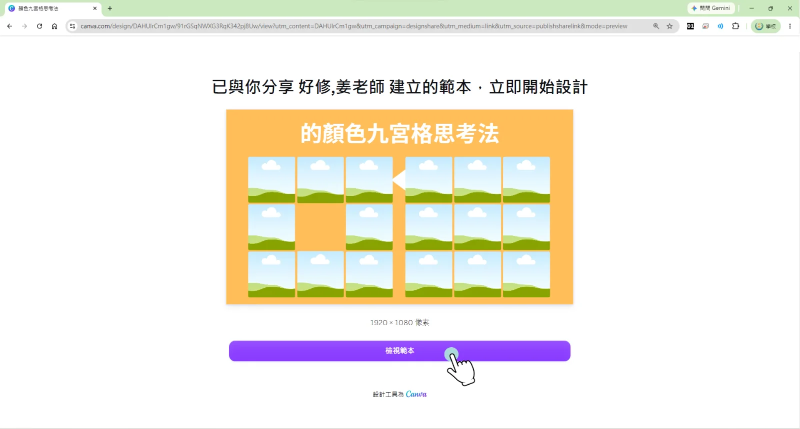
按下去以後，畫面中央會跳出白色的小視窗，標題寫著「你的範本已準備就緒！」。按左半邊那顆紫色按鈕：
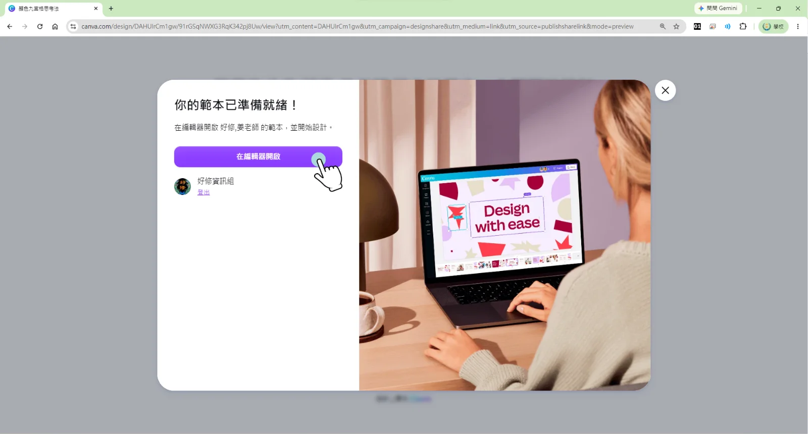
3畫面上那些方塊，叫做「邊框」
進到編輯畫面了。中間那一大片橘色上排著十七個藍天綠地白雲的方塊——它們不是圖片，是邊框。
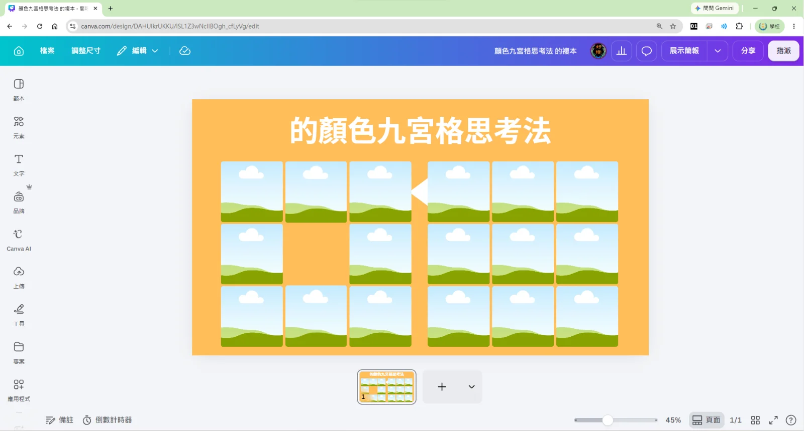
現在數一下：左邊三乘三應該是九格，可是左邊只有八格，正中間空著；右邊才是完整的九格。八加九＝十七，剛好。
那空著的一格去哪了？它就是背景本身——等一下你把背景換成什麼顏色，那一格就是什麼顏色。這一課的九宮格，正中間的主題不是一張照片，是一個顏色。
那一格
顏色
畫面上那個白色的小三角形，指的就是這條接力線：左邊右上角那一格，決定右邊整整九格。這是今天最需要動腦的地方，第 9 段會專門講。
4先在標題加上你的名字
最上面那行白色的大字寫著「的顏色九宮格思考法」——前面是空的，因為那裡要放你的名字。在那行字上連點兩下，游標就會進到字裡面，把名字打在最前面。
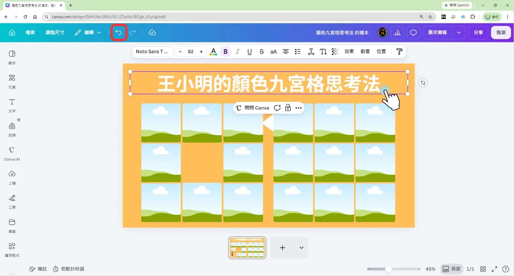
名字打好，順便複習上一課學的：字被紫色框選起來的時候，畫布正上方會浮出編輯區，可以換字體、調字的大小、改字的顏色。挑你喜歡的就好：
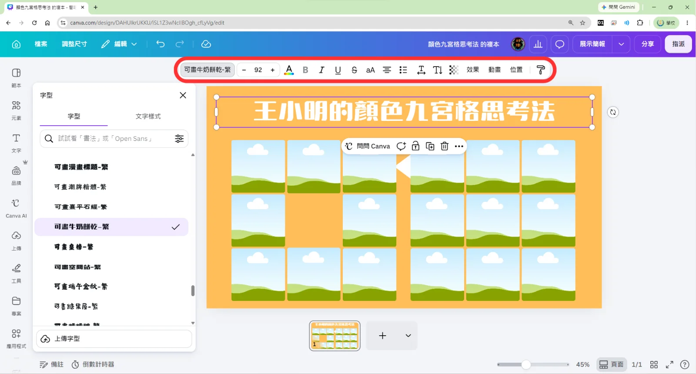
⚠️ 挑字體、字色的時候先想一下
標題現在是白色的，配橘色背景很清楚。但等一下你會把背景換成別的顏色——如果換成很淺的顏色，白字就會糊掉、幾乎看不見。所以顏色改完之後記得回頭看一眼標題，看不清楚就把字改成深色。
5挑一個顏色，當作你的主題
在橘色的背景上點一下（不要點到那些藍天綠地的方塊）。整片背景會被紫色外框框起來，畫布正上方浮出編輯區：
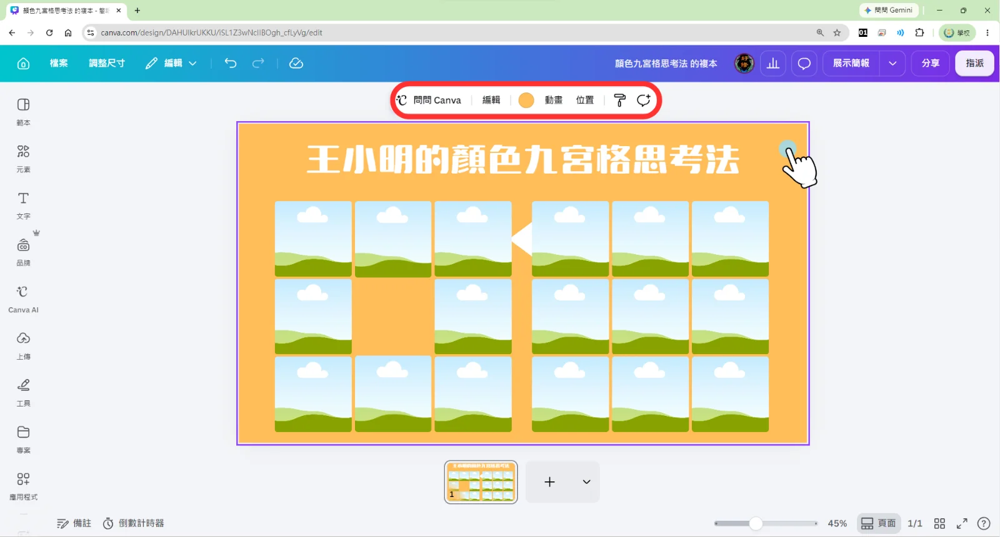
點那個圓形色塊，左邊會展開整片顏色面板：
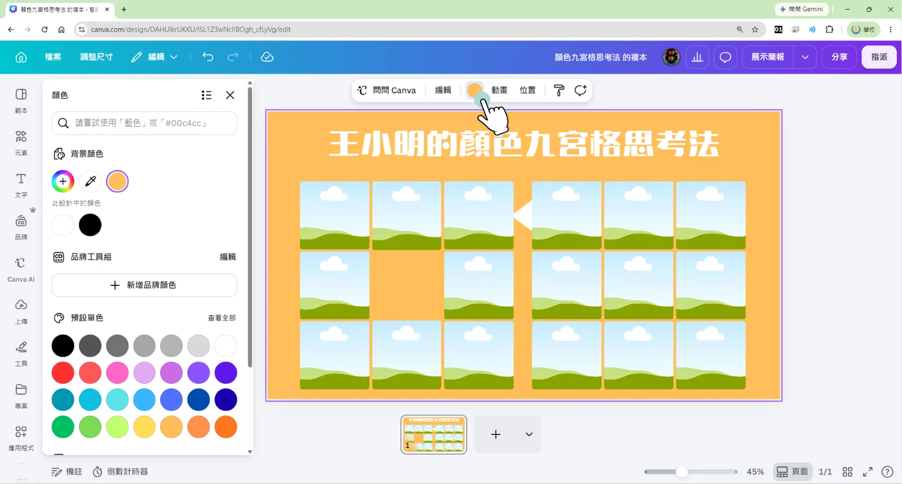
點彩虹圈圈會展開調色盤：上面那塊大方形拖游標選深淺，下面那條彩虹拖游標選色相，最下面的欄位會顯示這個顏色的代號。老師最後挑了一個比較淡的粉紅色，代號是 #FFD4E2：
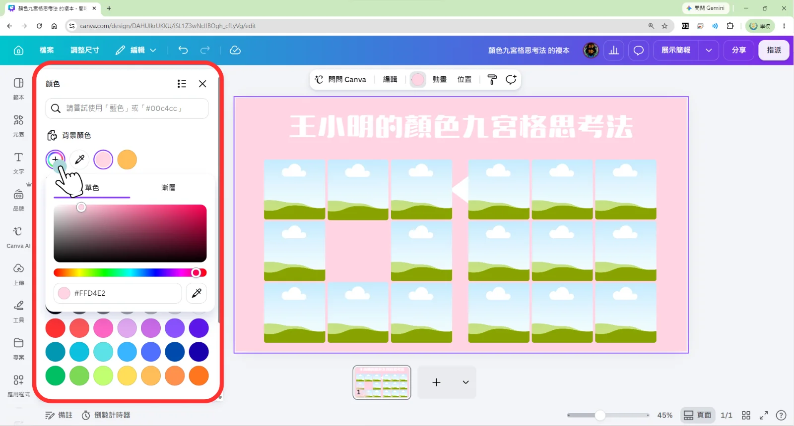
再看一次左邊：是不是少一格？ 少的那一格現在是粉紅色的，因為那就是你的主題。接下來八格要填的，全部都是「看到這個粉紅色，我會想到什麼」。
老師為什麼挑「比較淡」的粉紅，而不是很鮮豔的桃紅？
想想看：等一下十七格照片全部放上去以後，背景要扮演什麼角色？
6搜尋的功夫：把聯想變成關鍵字
到功能區點元素：
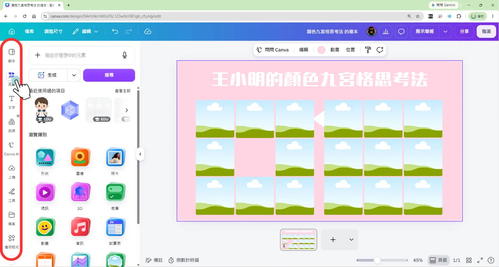
面板最上面是搜尋框。輸入你對這個顏色聯想到的東西——不是輸入「粉紅色」三個字，是輸入「粉紅色讓你想到的那個具體的東西」。粉紅色 → 櫻花：
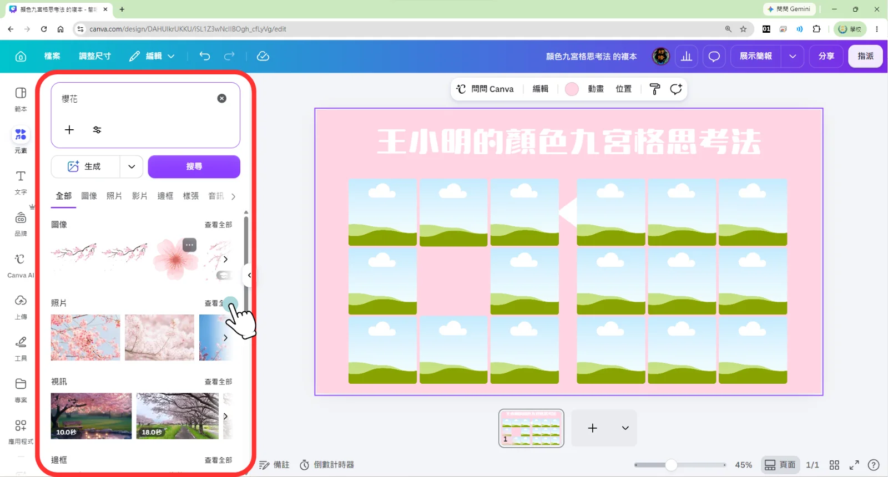
🔁 跟上一課剛好相反
上一課做名片，我們特地挑圖像，因為圖像背景透明，不會蓋住底下的線。
這一課相反：要挑照片。原因是照片全部都放得進邊框，圖像卻不一定。你當然可以試試看圖像，但很可能拖過去它就是不進去——那不是你操作錯，是那個圖像本來就不支援。直接切到「照片」分類最省事。
7把照片吸進邊框
點一下你選好的照片，它會直接出現在畫布正中央，而且是一張很大、蓋住半個畫面的照片。別緊張，接下來就是要把它拖進邊框：
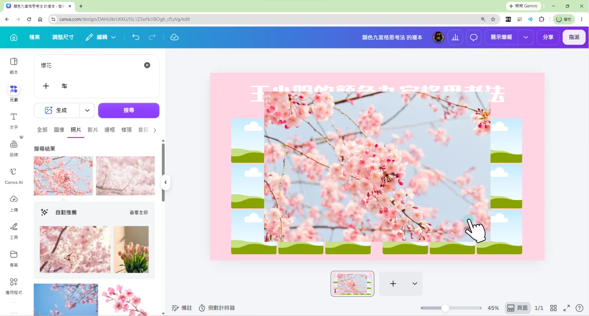
拖曳的手法是這一課最關鍵的動作，看老師示範一次：
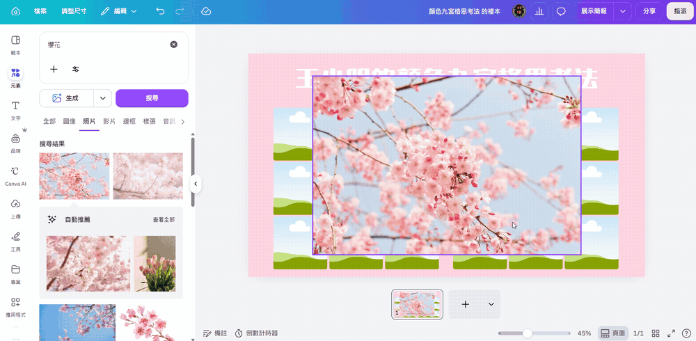
放錯格了怎麼辦？不用重新搜尋，把它「拆」出來就好：
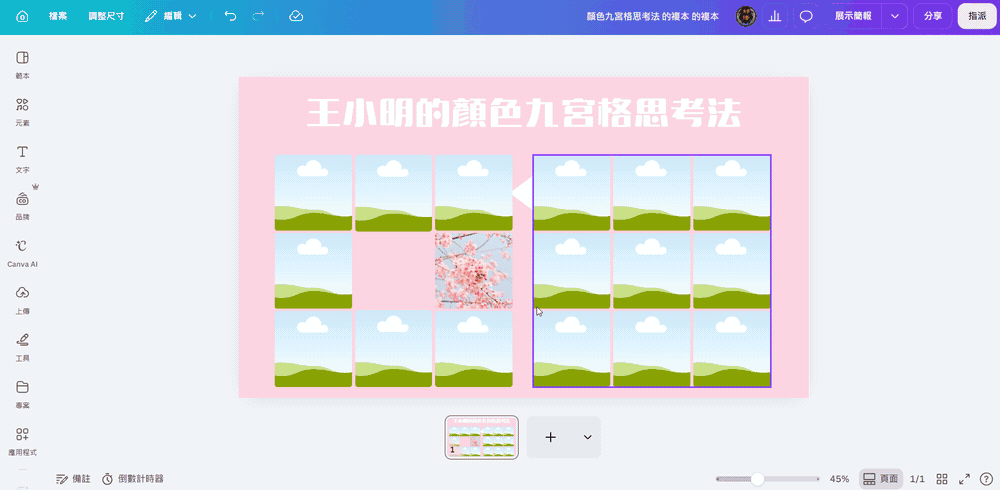
拖照片的時候，什麼時候才可以放開滑鼠？
回想一下影片：照片「被吸進去」的那一瞬間，就已經放對位置了嗎？
8重複八次，填滿左邊的九宮格
接下來就是同一套動作重複做：想一個聯想 → 搜尋關鍵字 → 切到照片 → 挑一張 → 拖進邊框。粉紅色可以想到的東西很多，草莓牛奶就是一個：
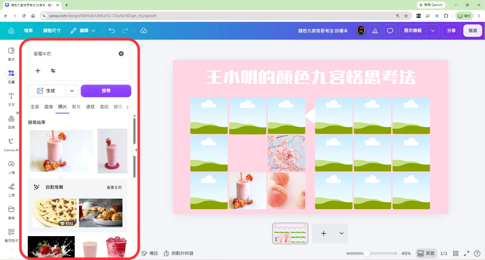
放進去以後如果覺得位置不對——比如草莓牛奶那杯偏掉了、想把它移到格子正中間——在那一格上快速連點兩下就會進到調整介面：
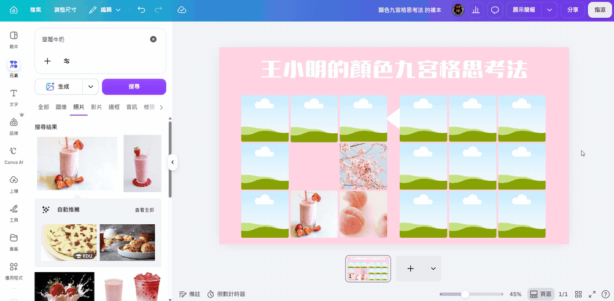
主題完全由你決定，只要顏色對就算數。老師還放了棉花糖、粉紅小豬玩偶、粉紅色的海灘傘、毛茸茸的愛心：
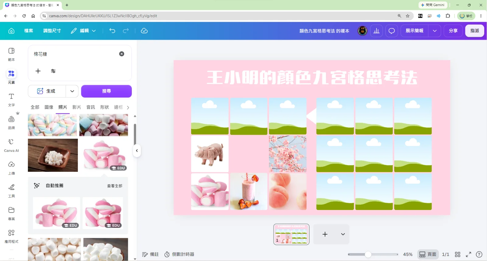
💡 想不出來的時候，往這幾個方向翻
- 吃的——草莓、水蜜桃、棉花糖、草莓牛奶、櫻花蝦
- 植物——櫻花、玫瑰、康乃馨、荷花
- 動物——小豬、紅鶴、水母
- 東西——氣球、雨傘、書包、髮夾
- 景色——夕陽、晚霞、粉紅色的海
每一類挑一兩個，八格很快就滿了。
9最關鍵的一格：右上角
八格裡有一格特別重要——左邊九宮格的右上角。那個白色小三角形就是指著它。右邊整整九格，全部都要從這一格延伸出去：
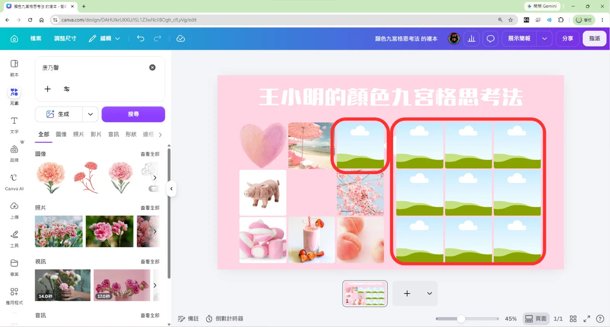
所以放這一格之前，先問自己一句：「這個東西，我還能再往外想八個嗎？」
共同點：它們連著一個更大的主題。
共同點：除了「它是粉紅色的」以外，再也講不出別的事。放在其他七格沒問題，放右上角就會卡住。
老師最後在這一格放了康乃馨——就是一朵花，但大家一看到它，腦袋裡就會自動跳出別的東西：
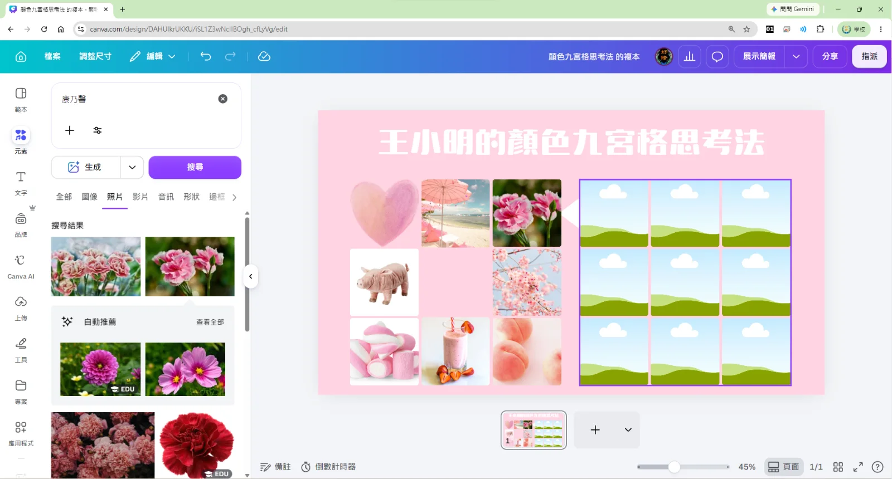
下面哪一個放在右上角，右邊的九宮格最好做？
問問自己：看到它，你腦袋裡會不會自動跳出另一件事？
10接力：長出右邊的九宮格
右邊的主題是康乃馨。從康乃馨可以延伸的東西很多，最直接的就是母親節——那就搜尋「母親節」：
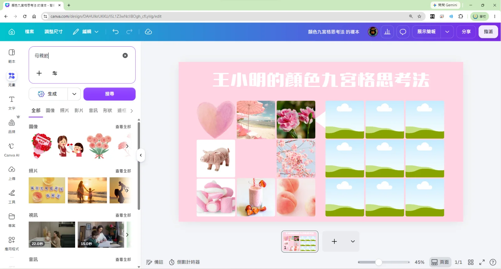
挑好之後，一樣長按拖進右邊的邊框，手法跟剛才完全相同：
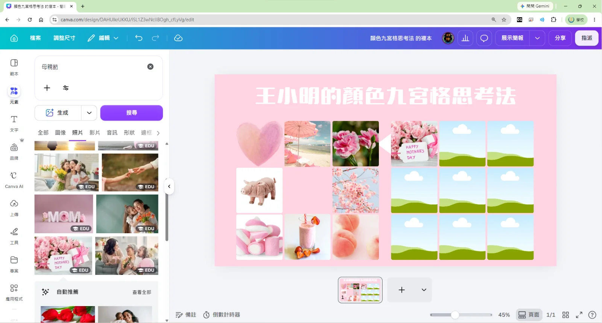
繼續以康乃馨為出發點往外想：花園、花店、花束、香水、送花給媽媽的人⋯⋯把右邊填滿：
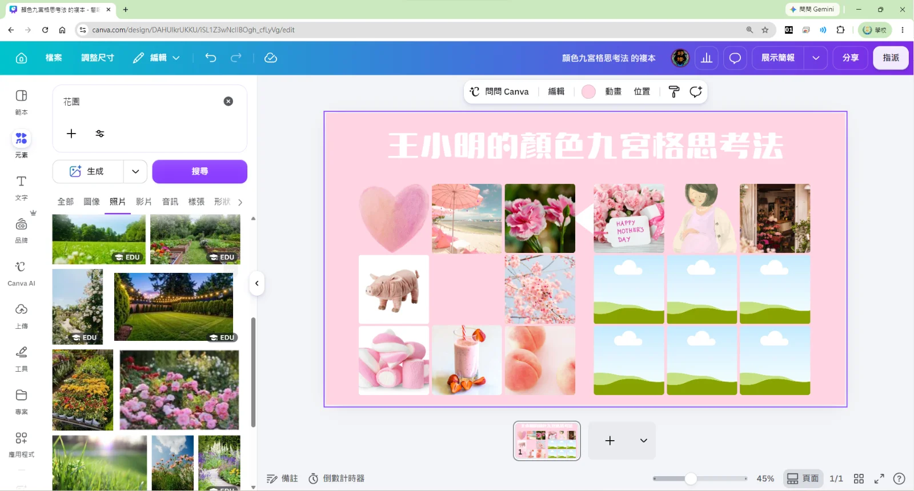
11完成，然後下載
十七格全部填滿，就是完成的樣子：
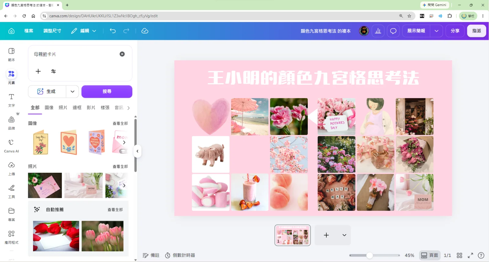
最後把它下載成一張圖片。做法跟上一課一模一樣，忘記了就回去翻：
⬇️ 下載的兩條路
- 做法一：右上角分享 → 面板下半部左邊第一個下載
- 做法二：左上角檔案 → 選單裡的下載
兩條路都會走到同一個面板。確認檔案類型是 PNG，再按最下面紫色的下載。詳細步驟看 第 1 課「把名片下載下來」那一段。
下載出來的成品長這樣——沒有 Canva 的介面，乾乾淨淨的一張圖：
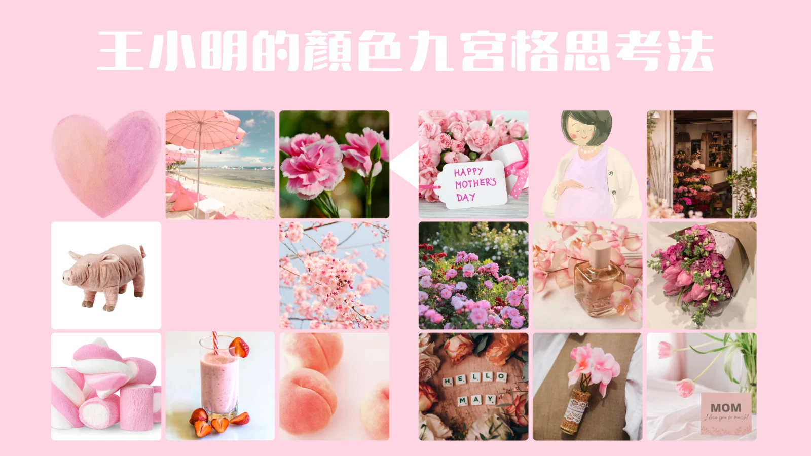
12換你做一張
照著下面的順序做一遍。做完一步就點一下打勾，才不會漏掉。
- 打開範本網址，按 檢視範本 → 在編輯器開啟，確認登入的是你自己的帳號
- 在標題上連點兩下，把你的名字加在最前面，順便換個喜歡的字體
- 點背景 → 編輯區的圓形色塊 → 挑一個顏色當作你的主題色
- 回頭確認標題還看得清楚，看不清楚就換字的顏色
- 用 元素 → 照片 搜尋跟你的顏色有關的東西，長按拖進邊框、移到對的格子再放手
- 重複到左邊八格都填滿（放錯就右鍵 → 分離圖片；位置不順就連點兩下調）
- 好好想一下右上角那一格——挑一個「還能再往外想八個」的東西
- 以右上角那一格為主題，把右邊九格也填滿
- 按 分享 → 下載（或 檔案 → 下載），檔案類型選 PNG，存起來
⚠️ 交作品之前，自己先檢查三件事
- 十七格都填滿了嗎？還留著藍天綠地白雲的，就是那一格還沒放。
- 左邊八格真的都是同一個顏色家族嗎？混進一格綠色的，整片就散掉了。
- 右邊九格真的跟右上角那一格有關嗎？如果你講不出「它們為什麼在一起」，就代表接力斷了。
🎁 做完了還有時間？
- 把作品給同學看，請他猜猜看你右上角那一格是哪一格——猜得中，代表你的接力做得夠清楚。
- 換一個顏色再做一張。同樣的十七格，藍色會長出完全不同的東西。
- 回家拿紙筆，用九宮格寫一次你自己的目標：中間寫想做到的事，周圍八格寫「為了做到它，我要做的八件事」。